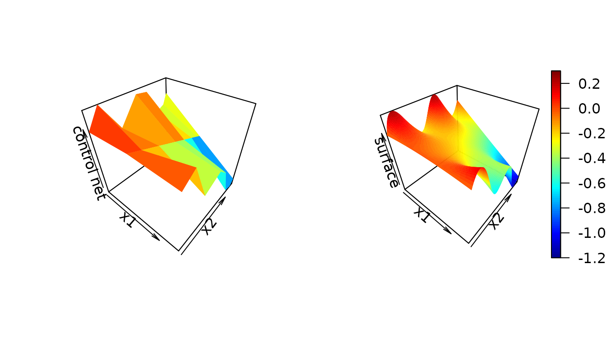
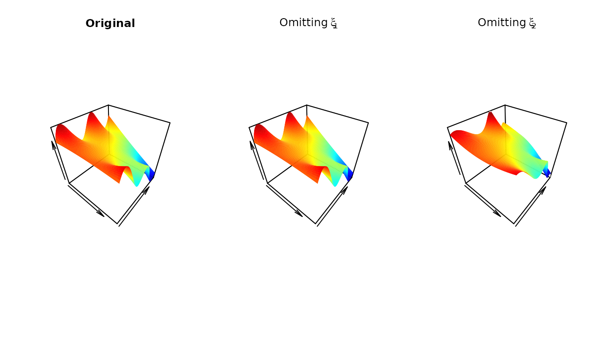
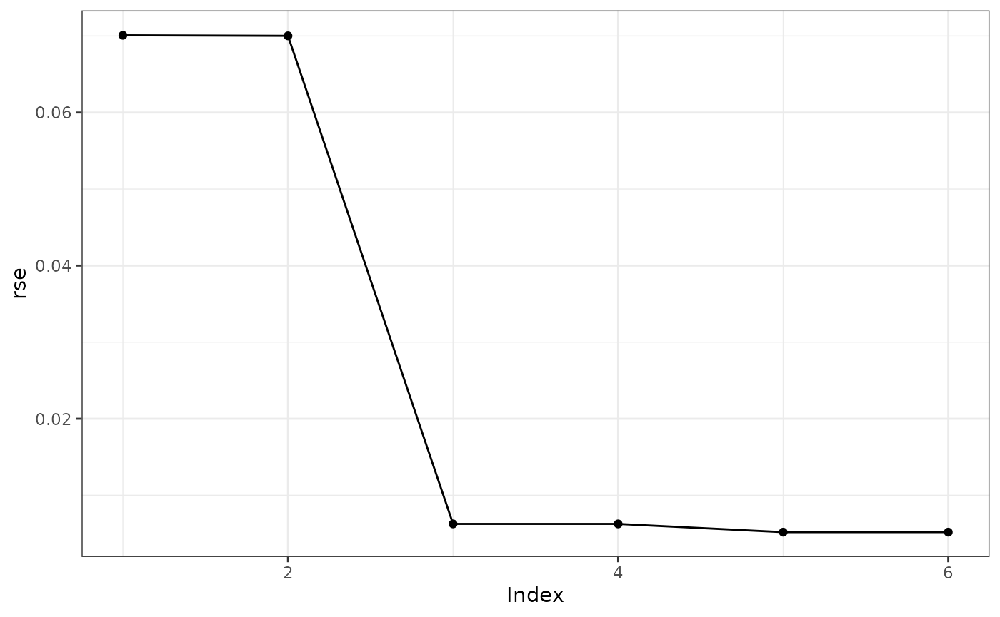
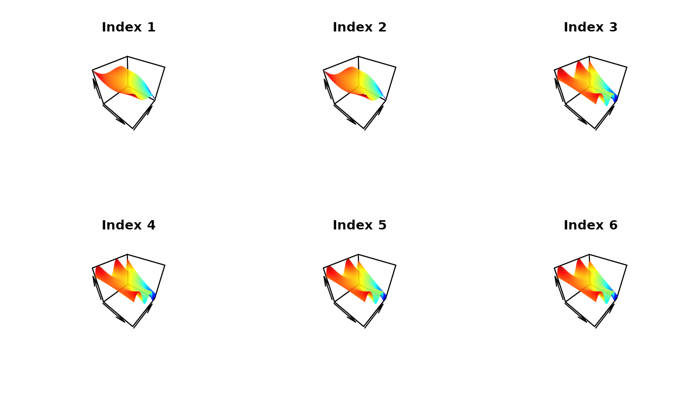

Tensor Products of B-Splines, Control Nets, and Control Net Reduction
Peter E. DeWitt
Source:vignettes/cnr.Rmd
cnr.Rmd
library(cpr)
packageVersion("cpr")
## [1] '0.3.0.9006'The control polygon reduction methods for uni-variable functions can be extended to multi-variable functions by generalizing control polygons to control nets.
Tensor Products of B-Splines
Where uni-variable functions of B-splines:
\[\begin{equation} f \left( x \right) = \sum_{j} \theta_j B_{j,k,\boldsymbol{\xi}}\left(x\right) = \boldsymbol{B}_{k, \boldsymbol{\xi}} \left(x\right) \boldsymbol{\theta}_{\boldsymbol{\xi}} \label{eq:f} \end{equation}\]
we extend to multi-variable \(m\)-dimensional B-spline function, built on \(m\) B-spline basis matrices \(\boldsymbol{B}_{k_1, \boldsymbol{\xi}_1} \left(x_1\right),\) \(\boldsymbol{B}_{k_2, \boldsymbol{\xi}_2} \left(x_2\right), \ldots,\) \(\boldsymbol{B}_{k_m, \boldsymbol{\xi}_m} \left(x_m\right),\) as
\[\begin{equation} f \left( \boldsymbol{X} \right) = \mathscr{B}_{\boldsymbol{K}, \boldsymbol{\Xi}} \left( \boldsymbol{X} \right) \boldsymbol{\theta}_{\boldsymbol{\Xi}} \end{equation}\]
where \(\boldsymbol{K} = \left\{k_1, k_2, \ldots, k_m\right\},\) denotes the set of polynomial orders, \(\boldsymbol{\Xi} = \left\{ \boldsymbol{\xi}_1, \boldsymbol{\xi}_2, \ldots, \boldsymbol{\xi}_m \right\}\) is the set of knot sequences, and \(\boldsymbol{\theta}_{\boldsymbol{\Xi}}\) is a \(\prod_{i = 1}^{m} \left( \left\lvert \boldsymbol{\xi}_i \right\rvert - k_i \right) \times 1\) column vector of regression coefficients, and \(\boldsymbol{X}\) is the observed data:
\[\begin{equation} \boldsymbol{X} = \begin{pmatrix} x_{11} & x_{21} & \cdots & x_{m1} \\ x_{12} & x_{22} & \cdots & x_{m2} \\ \vdots & \vdots & \ddots & \vdots \\ x_{12} & x_{22} & \cdots & x_{mn} \end{pmatrix}. \end{equation}\]
The basis for multi-variable B-splines is constructed by a recursive algorithm. The base case for \(m = 2\) is \[\begin{equation} \label{eq:tensor_product_base_case} \mathscr{B}_{ \left\{k_1, k_2\right\}, \left\{ \boldsymbol{\xi}_1, \boldsymbol{\xi}_2 \right\}} \left( \boldsymbol{x}_1, \boldsymbol{x}_2 \right) = \left(\boldsymbol{1}^T_{\left\lvert{\boldsymbol{\xi}_2}\right\rvert - k_2} \otimes \boldsymbol{B}_{k_1, \boldsymbol{\xi}_1} \left(\boldsymbol{x}_1 \right) \right) \odot \left(\boldsymbol{B}_{k_2, \boldsymbol{\xi}_2} \left( \boldsymbol{x}_2 \right) \otimes \boldsymbol{1}^{T}_{\left\lvert{\boldsymbol{\xi}_1}\right\rvert - k_1} \right), \end{equation}\] where \(\odot\) is the element-wise product, \(\otimes\) is a Kronecker product, and \(\boldsymbol{1}_n\) is a \(n \times 1\) column vector of 1s. The two Kronecker products define the correct dimensions for the entry-wise product. The tensor product matrix has the same number of rows as the two input matrices and the columns are generated by all the pairwise products of the columns of the two input matrices. The general case for \(m > 2,\) the matrix \(\mathscr{B}_{\boldsymbol{K}, \boldsymbol{\Xi}} \left( \boldsymbol{X} \right)\) is defined by \[\begin{equation} \mathscr{B}_{\boldsymbol{K}, \boldsymbol{\Xi}} \left( \boldsymbol{X} \right) = \left( \boldsymbol{1}_{\left\lvert{\boldsymbol{\xi}_m}\right\rvert - k_m}^{T} \otimes \mathscr{B}_{\boldsymbol{K} \backslash k_{m}, \boldsymbol{\Xi} \backslash \boldsymbol{\xi}_m} \left(\boldsymbol{X} \backslash \boldsymbol{x}_{m} \right) \right) \odot \left( \boldsymbol{B}_{k_m, \boldsymbol{\xi}_m}\left(\boldsymbol{x}_m\right) \otimes \boldsymbol{1}_{\prod_{i = 1}^{m-1} \left(\left\lvert{\boldsymbol{\xi}_i}\right\rvert - k_i \right)}^{T} \right). \end{equation}\]
It is possible to write the above as a set of summations: \[\begin{equation} \begin{split} f\left( \boldsymbol{X} \right) & = \mathscr{B}_{\boldsymbol{K}, \boldsymbol{\Xi}} \left( \boldsymbol{X} \right) \boldsymbol{\theta}_{\boldsymbol{\Xi}} \\ & = \sum_{j_1 = 1}^{\left\lvert{\boldsymbol{\xi}_1}\right\rvert - k_1} \sum_{j_2 = 1}^{\left\lvert{\boldsymbol{\xi}_2}\right\rvert - k_2} \cdots \sum_{j_m = 1}^{\left\lvert{\boldsymbol{\xi}_m}\right\rvert - k_m} \boldsymbol{B}_{k_1, \boldsymbol{\xi}_1}\left(\boldsymbol{x}_1\right) \boldsymbol{B}_{k_2, \boldsymbol{\xi}_2}\left(\boldsymbol{x}_2\right) \cdots \boldsymbol{B}_{k_m, \boldsymbol{\xi}_m}\left(\boldsymbol{x}_m\right) \theta_{\boldsymbol{\Xi}, j_1, j_2, \ldots, j_m} \\ & = \sum_{j_1 = 1}^{\left\lvert{\boldsymbol{\xi}_1}\right\rvert - k_1} \boldsymbol{B}_{k_1,\boldsymbol{\xi}_1}\left(\boldsymbol{x}_1\right) \underbrace{ \sum_{j_2 = 1}^{\left\lvert{\boldsymbol{\xi}_2}\right\rvert - k_2} \cdots \sum_{j_m = 1}^{\left\lvert{\boldsymbol{\xi}_m}\right\rvert - k_m} \boldsymbol{B}_{k_2,\boldsymbol{\xi}_2}\left(\boldsymbol{x}_2\right) \cdots \boldsymbol{B}_{k_m,\boldsymbol{\xi}_m}\left(\boldsymbol{x}_m\right) \theta_{\boldsymbol{\Xi}, j_1, j_2, \ldots, j_m} }_{\text{polynomial coefficients}} \\ & = \text{diag}\left( \boldsymbol{B}_{k_1, \boldsymbol{\xi}_1} \left(\boldsymbol{x}_1\right) \boldsymbol{\theta}_{\boldsymbol{\Xi}\backslash \boldsymbol{\xi}_1} \left( \boldsymbol{X} \backslash \boldsymbol{x}_1 \right)\right). \end{split} \end{equation}\] This is critical in the extension from the uni-variable control polygon reduction method to the multi-variable control polygon reduction method. By conditioning on \(m-1\) marginals, the multi-variable B-spline becomes a uni-variable B-spline in terms of the \(m^{th}\) marginal. Thus, the metrics and methods of control polygon reduction can be applied.
Control Nets
For multi-variable B-splines, a meaningful geometric relationship between the set of knot sequences, \(\boldsymbol{\Xi},\) and regression coefficients, \(\boldsymbol{\theta}_{\boldsymbol{\Xi}},\) is provided by a control net. A control net for \(m = 2\) variables would be: \[\begin{equation} {CN}_{\boldsymbol{K} = \left\{k_1, k_2\right\}, \boldsymbol{\Xi} = \left\{ \boldsymbol{\xi}_1, \boldsymbol{\xi}_2 \right\}, \boldsymbol{\theta}_{\boldsymbol{\Xi}}} = \left\{ \left( \xi_{1i}^{*}, \xi_{2j}^{*}, \theta_{ij} \right) \right\}_{i = 1, j = 1}^{\left\lvert{\boldsymbol{\xi}_1}\right\rvert - k_1, \left\lvert{\boldsymbol{\xi}_2}\right\rvert - k_2}, \quad \xi^{*}_{lj} = \frac{1}{k_l + 1} \sum_{i = 1}^{k_l - 1} \xi_{l, j + i}. \end{equation}\]
Building a control net in the cpr package is done by calling the
cn function after defining a basis via the
btensor method.
Define a tensor product of B-splines by providing a list of vectors, iknots, bknots, and orders.
tpmat <-
btensor(x = list(x1 = runif(51), x2 = runif(51)),
iknots = list(numeric(0), c(0.418, 0.582, 0.676, 0.840)),
bknots = list(c(0, 1), c(0, 1)),
order = list(3, 4))
tpmat
## Tensor Product Matrix dims: [51 x 24]An example of a control net and the surface it produces:
theta <-
c(-0.03760, 0.03760, -0.03760, 0.77579, -0.84546, 0.63644, -0.87674,
0.71007, -1.21007, 0.29655, -0.57582, -0.26198, 0.23632, -0.58583,
-0.46271, -0.39724, -0.02194, -1.23562, -0.19377, -0.27948, -1.14028,
0.00405, -0.50405, -0.99595)
acn <- cn(tpmat, theta)
par(mfrow = c(1, 2))
plot(acn, rgl = FALSE, xlab = "x1", ylab = "x2", zlab = "control net", clim = c(-1.2, 0.3), colkey = FALSE)
## Warning in rgl.init(initValue, onlyNULL): RGL: unable to open X11 display
## Warning: 'rgl.init' failed, running with 'rgl.useNULL = TRUE'.
## Warning: no DISPLAY variable so Tk is not available
plot(acn, rgl = FALSE, show_net = FALSE, show_surface = TRUE, xlab = "x1", ylab = "x2", zlab = "surface", clim = c(-1.2, 0.3))
Control Net Reduction
Similar to control polygon reduction (CPR), control net reduction (CNR) looks assesses the influence of each internal knot, omits the least influential, refits the model, and repeats. A complication for CNR is that the influence of an internal knot on margin \(m\) is a function of the locations values of \(x\) on the other margins defining the polynomial coefficients. We suggest using a set of \(p=20\) values on each margin for assessment.
For example in a two-variable tensor product, the influence weight of the \(j^{th}\) internal knot for the first margin is
\[w_{1j} = \max_{x_2 \in \boldsymbol{U}} w_{\left. 1j \right| x_2},\] where \[\boldsymbol{U} = \left\{ u : \min\left(x_2\right) + \frac{\left\{1,2,\ldots,p\right\}}{p+1} \left( \max\left(x_2\right) - \min\left(x_2\right)\right) \right\} \]
For example:
f <- function(x1, x2) {(x1 - 0.5)^2 * sin(4 * pi * x2) - x1 * x2}
set.seed(42)
cn_data <- expand.grid(x1 = sort(runif(100)), x2 = sort(runif(100)))
cn_data <- within(cn_data, {z = f(x1, x2)})
initial_cn <-
cn(z ~ btensor(x = list(x1, x2)
, iknots = list(c(0.234), c(0.418, 0.582, 0.676, 0.840))
, bknots = list(c(0, 1), c(0, 1))
, order = list(3, 4)
)
, data = cn_data)
influence_of_iknots(initial_cn)
## [[1]]
## xi_4
## 5.282465e-32
##
## [[2]]
## xi_5 xi_6 xi_7 xi_8
## 0.717424005 0.045575415 0.006775287 0.012875249
##
## attr(,"class")
## [1] "cpr_influence_of_iknots_cpn" "list"The least influential knot is \(\xi_{1,4}\) and the most influential knot is \(\xi_{2,5}.\)
cn1 <- update_btensor(initial_cn, iknots = list(numeric(0), c(0.418, 0.582, 0.676, 0.840)))
cn2 <- update_btensor(initial_cn, iknots = list(numeric(0.234), c(0.582, 0.676, 0.840)))
par(mfrow = c(1, 3))
plot(initial_cn, rgl = FALSE, show_surface = TRUE, show_net = FALSE, colkey = FALSE, clim = c(-1.2, 0.3), main = "Original")
plot(cn1, rgl = FALSE, show_surface = TRUE, show_net = FALSE, colkey = FALSE, clim = c(-1.2, 0.3), main = bquote(Omitting~xi[1,1]))
plot(cn2, rgl = FALSE, show_surface = TRUE, show_net = FALSE, colkey = FALSE, clim = c(-1.2, 0.3), main = bquote(Omitting~xi[2,1]))
A call to cnr runs the full CNR algorithm on an initial
control net.
cnr0 <- cnr(initial_cn)
##
|
| | 0%
|
|============ | 17%
|
|======================= | 33%
|
|=================================== | 50%
|
|=============================================== | 67%
|
|========================================================== | 83%
|
|======================================================================| 100%
summary(cnr0)
## dfs loglik rss rse n_iknots1 iknots1 n_iknots2 iknots2
## 1 12 12396.78 49.0631393 0.070087150 0 0
## 2 15 12408.53 48.9479832 0.070015367 0 1 0.582
## 3 18 36554.82 0.3912139 0.006260346 0 2 0.418, 0.582
## 4 21 36559.88 0.3908179 0.006258118 0 3 0.418, 0....
## 5 24 38449.23 0.2678356 0.005181505 0 4 0.418, 0....
## 6 32 38449.23 0.2678356 0.005183584 1 0.234 4 0.418, 0....
## index
## 1 1
## 2 2
## 3 3
## 4 4
## 5 5
## 6 6
plot(cnr0)
The plot of the residual standard errors by index shows index 3 is the preferable model. We can look at all the surfaces and see there is little difference from the original (index 6) through index 3 with considerable differences in the surfaces for index 1 and 2.
par(mfrow = c(2, 3))
plot(cnr0[[1]], rgl = FALSE, show_surface = TRUE, show_net = FALSE, clim = c(-1.2, 0.3), main = "Index 1", colkey = FALSE)
plot(cnr0[[2]], rgl = FALSE, show_surface = TRUE, show_net = FALSE, clim = c(-1.2, 0.3), main = "Index 2", colkey = FALSE)
plot(cnr0[[3]], rgl = FALSE, show_surface = TRUE, show_net = FALSE, clim = c(-1.2, 0.3), main = "Index 3", colkey = FALSE)
plot(cnr0[[4]], rgl = FALSE, show_surface = TRUE, show_net = FALSE, clim = c(-1.2, 0.3), main = "Index 4", colkey = FALSE)
plot(cnr0[[5]], rgl = FALSE, show_surface = TRUE, show_net = FALSE, clim = c(-1.2, 0.3), main = "Index 5", colkey = FALSE)
plot(cnr0[[6]], rgl = FALSE, show_surface = TRUE, show_net = FALSE, clim = c(-1.2, 0.3), main = "Index 6", colkey = FALSE)
Session Info
sessionInfo()
## R version 4.3.2 (2023-10-31)
## Platform: x86_64-pc-linux-gnu (64-bit)
## Running under: Ubuntu 22.04.3 LTS
##
## Matrix products: default
## BLAS: /usr/lib/x86_64-linux-gnu/openblas-pthread/libblas.so.3
## LAPACK: /usr/lib/x86_64-linux-gnu/openblas-pthread/libopenblasp-r0.3.20.so; LAPACK version 3.10.0
##
## locale:
## [1] LC_CTYPE=C.UTF-8 LC_NUMERIC=C LC_TIME=C.UTF-8
## [4] LC_COLLATE=C.UTF-8 LC_MONETARY=C.UTF-8 LC_MESSAGES=C.UTF-8
## [7] LC_PAPER=C.UTF-8 LC_NAME=C LC_ADDRESS=C
## [10] LC_TELEPHONE=C LC_MEASUREMENT=C.UTF-8 LC_IDENTIFICATION=C
##
## time zone: UTC
## tzcode source: system (glibc)
##
## attached base packages:
## [1] stats graphics grDevices utils datasets methods base
##
## other attached packages:
## [1] cpr_0.3.0.9006 qwraps2_0.6.0
##
## loaded via a namespace (and not attached):
## [1] generics_0.1.3 utf8_1.2.4 sass_0.4.8 tcltk_4.3.2
## [5] stringi_1.8.3 lattice_0.21-9 lme4_1.1-35.1 digest_0.6.33
## [9] magrittr_2.0.3 rgl_1.2.8 evaluate_0.23 grid_4.3.2
## [13] fastmap_1.1.1 jsonlite_1.8.8 Matrix_1.6-4 misc3d_0.9-1
## [17] fansi_1.0.6 purrr_1.0.2 scales_1.3.0 textshaping_0.3.7
## [21] jquerylib_0.1.4 cli_3.6.2 rlang_1.1.2 munsell_0.5.0
## [25] splines_4.3.2 withr_2.5.2 base64enc_0.1-3 cachem_1.0.8
## [29] yaml_2.3.8 tools_4.3.2 memoise_2.0.1 nloptr_2.0.3
## [33] dplyr_1.1.4 minqa_1.2.6 colorspace_2.1-0 ggplot2_3.4.4
## [37] boot_1.3-28.1 vctrs_0.6.5 R6_2.5.1 lifecycle_1.0.4
## [41] plot3D_1.4 stringr_1.5.1 fs_1.6.3 htmlwidgets_1.6.4
## [45] MASS_7.3-60 ragg_1.2.7 pkgconfig_2.0.3 desc_1.4.3
## [49] pillar_1.9.0 pkgdown_2.0.7 bslib_0.6.1 gtable_0.3.4
## [53] glue_1.6.2 Rcpp_1.0.11 systemfonts_1.0.5 tidyselect_1.2.0
## [57] tibble_3.2.1 xfun_0.41 highr_0.10 knitr_1.45
## [61] farver_2.1.1 htmltools_0.5.7 nlme_3.1-163 labeling_0.4.3
## [65] rmarkdown_2.25 compiler_4.3.2